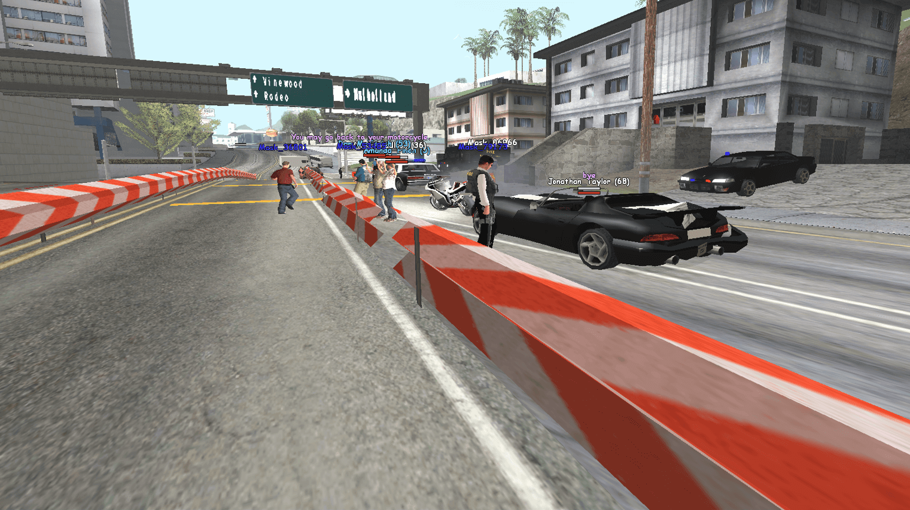

Snap checking - Federal Bureau of Investigation
On 6th of July 2023, the FBI established a checkpoint at Mulholland Intersection to monitor the traffic that was entering Los Santos. The main purpose of the checkpoint was to search vehicles for illegal items and check their drivers' documents....
